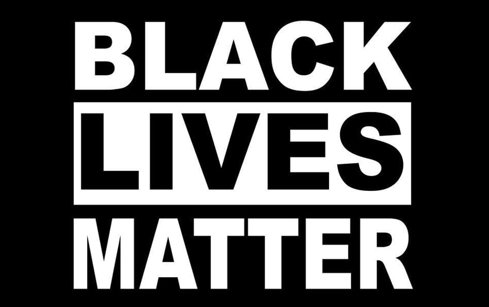
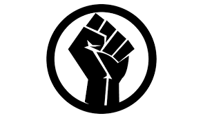

Create a space that is safe for kids to reflect on their emotional responses to the recent tragic events. Start by asking what they’ve heard. Focus on themes they understand, such as fairness and empathy. You can point out that George Floyd was not treated fairly and in our school/family, we believe everyone should be treated fairly. It’s okay not to have all the answers. But it’s important to recognize that upsetting events are happening and this is a safe space to talk about it, listen to one another, and learn how we can change things. For more ideas on how to create a safe space for reflection, see Facing History and Ourselves.
Children, like adults, see skin color. Even from a young age, they’re aware of these kinds of differences. It’s essential to acknowledge race even if you think it doesn’t impact your family because it does, in fact, affect everyone. When we discuss identity—and encourage kids to take pride in who they are and respect the differences in others—we empower them to stand up to racial injustice. Talking about these issues with children also allows us to show how they can disrupt inequality and combat systemic racism. Talking about race is not racist. It’s important!
“Black Lives Matter” doesn’t mean that only Black lives matter. It means that racism unfairly affects Black lives—the Black Lives Matter movement is calling on everyone to change that. Even if the intention is sincere, help your child understand that the phrase “All Lives Matter” implies that the BLM movement’s critique of systemic racism and its effects on Black people is invalid. For more teacher support on this topic, see Dena Simmons’ article, How to Be an Antiracist Educator. For more family support, read “6 Reasons ‘All Lives Matter’ Doesn’t Work—in Terms Simple Enough for a Child” from Parents.com. Racial colorblindness is the idea that NOT seeing color is a good thing; that race shouldn’t matter. But, in fact, it does the opposite. When we don’t recognize race, we perpetuate racial misunderstandings and we erase the specific lived experience of those affected by racism. For a truly antiracist society to exist one day, it’s essential to be aware of and talk about race. We can’t afford to be silent.
Acknowledge kids’ anxieties and fear, but also reassure them that many people are working very hard to change things and keep them safe. It’s important to give children hope. We can give them hope by offering tools to work with. Explain that mass protest movements—from Civil Rights and Women’s Suffrage to Black Lives Matter—have historically been able to change institutions and systems. Assure them that society can continue to improve. Empower young people by encouraging them to use their voice and actions to participate and make a difference. They can stand up for their friends and classmates, write letters, and engage in adult-guided activities—like fundraisers.
